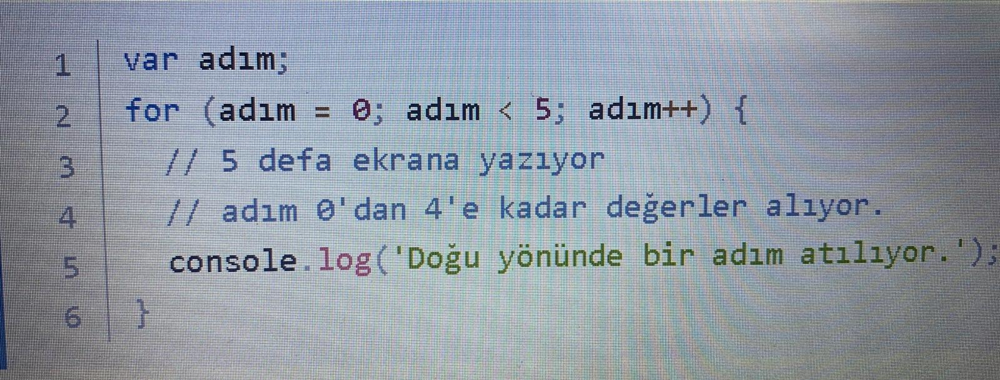
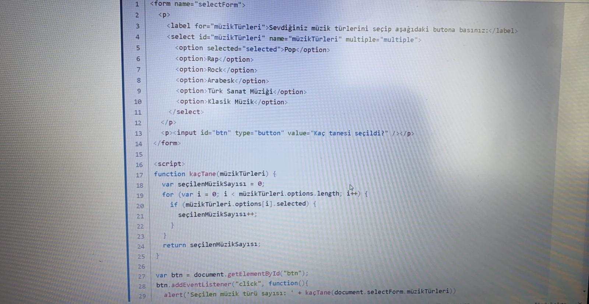
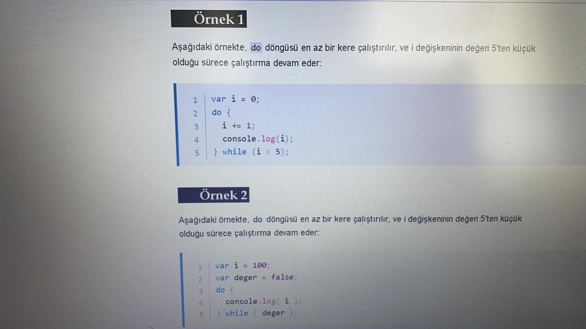
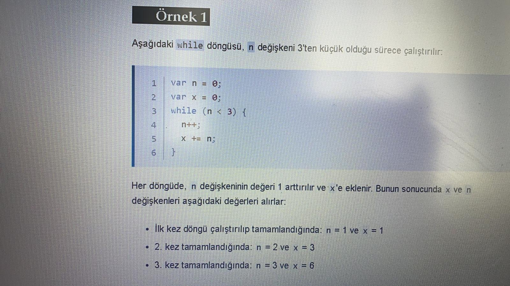
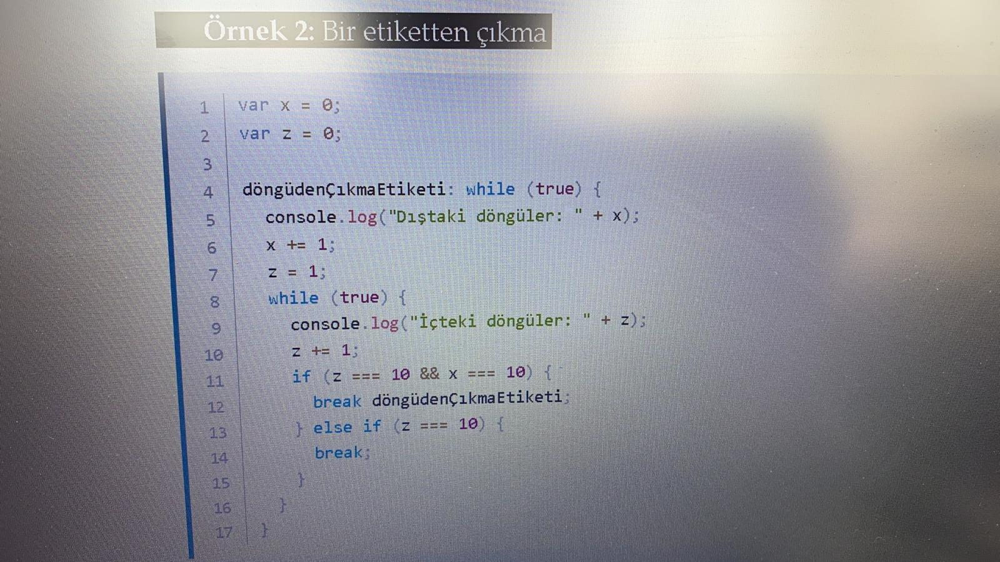

Döngüler, bir işlemin art arda yapılması için hızlı ve kolay bir yöntem sunarlar. JavaScript Rehberi'nin bu bölümünde, JavaScript içerisinde yer alan çeşitli yineleme ifadeleri anlatılacaktır.
Döngüleri şu şekildeki basit bir bilgisayar oyunu olarak düşünebilirsiniz: Doğu yönünde 5 adım ilerle ve devamında batı yönünde 3 adım ilerleyerek hazineyi bul. Bu fikri basitçe kodlamak gerekirse:

Birçok döngü türü vardır, fakat özünde hepsi aynı şeyi yaparlar: ardı ardına belirlenen bir işlemi gerçekleştirirler. Genelde gerçekleştirilen işlem adımı 0'dan başlar. Döngünün bitiş ve başlangıç noktalarının belirlenmesi için çeşitli döngü mekanizmaları mevcuttur. Bir döngünün diğer döngülere göre daha avantajlı olmasını sağlayan farklı durumlar vardır.
JavaScript'teki döngü ifadeleri aşağıdaki şekilde listelenmiştir:
for döngüsü
do...while döngüsü
while döngüsü
Etiketlenmiş ifadeler
break ifadesi
continue ifadesi
for...in ifadesi
for...of ifadesi
Bir for döngüsü, belirlenen koşul sağlandığı sürece içerdiği komutların çalıştırılmasını sağlar. JavaScript'teki for döngüsü, Java ve C dilindeki for döngüsü ile benzerdir. For döngüsünün söz dizimi aşağıdaki şekildedir:
for ([başlangıçAtaması]; [koşulİfadesi]; [arttırımİfadesi])
ifade
Bir for döngüsündeki algoritmanın adımları aşağıdaki şekildedir:
Bir başlangıçAtaması ifadesi varsa çalıştırılır. Bu ifadede genellikle bir veya daha fazla döngü sayıcısına atama işlemi yapılır. Ayrıca değişken tanımı da yapılabilir.
koşulİfadesi çalıştırılır. Eğer koşulİfadesi değeri true ise, ifade çalıştırılabilir. Eğer koşulİfadesi değeri false ise, for döngüsünden çıkılır. Eğer koşulİfadesi boş geçilirse, değeri her zaman true olarak varsayılır ve sonsuz döngü oluşturulmuş olur.
ifade çalıştırılır. Birden fazla ifade çalıştırılacaksa, ifadeleri gruplamak için blok ifadesi ({ ... }) kullanılır.
arttırımİfadesi varsa çalıştırılır ve 2 numaralı adıma geri dönülür.

DO...WHİLE DÖNGÜSÜ
do...while döngüsü, belirlenen bir koşul sağlandığı sürece döngünün çalıştırılmasına olanak tanır. Bir do...while döngüsü aşağıdaki gibidir:
do
ifade
while (koşul);
koşul kontrol edilmeden hemen önce ifade çalıştırılır. Çoklu ifadelerin çalıştırılması için, blok ifadesi ({...}) kullanılarak ifadeler gruplandırılır. Eğer koşul sağlanırsa, ifade tekrar çalıştırılır. Çalıştırıldıktan sonra, koşul tekrar kontrol edilir. Eğer koşul sağlanmazsa, ifadenin çalıştırılması durdurulur ve do...while döngüsünden sonraki komutlar çalıştırılır. koşul kontrol edilmeden hemen önce ifade çalıştırıldığı için, koşul değeri false olsa bile blok satırınız içerisindeki kodlar 1 defa çalıştırılır.

wWHİLE DÖNGÜSÜ
Bir while döngüsü, belirlenen koşul sağlandığı sürece çalıştırılmaya devam eder. Örnek bir while döngüsü aşağıdaki gibidir:
while (koşul)
ifade
Döngü içerisindeki ifade çalıştırılmadan önce koşul kontrol edilir. Eğer koşul sağlanırsa, ifade çalıştırılır ve koşul tekrar kontrol edilir. Eğer koşul sağlanmazsa, döngü içerisindeki ifadenin çalıştırılması durdurulur ve while döngüsünden çıkılarak sonraki komutlar çalıştırılır.
Çoklu ifadelerin çalıştırılması için, blok ifadesi ({...}) kullanılarak ifadeler gruplanır.

ETİKETLENMİŞ İFADELER
Bir etiketlenmiş ifadede , bir anahtar kelime ve bu kelimeye bağlı çalıştırılacak bir ifade bulunur.Anahtar kelime kullanılarak, program içerisindeki herhangi bir yerde, anahtar kelime ile ilişkili ifade çalıştırılabilir. Örneğin, bir döngü, anahtar kelime ile etiketlenerek, uygulama içerisindeki herhangi bir yerden çalıştırılabilir.
Etiketlenmiş bir ifade aşağıdaki şekildedir:
etiket :
çalıştırılacak_ifade
Etiket adı, herhangi bir değişken adının aldığı şekilde değerler alabilir. Etiket ile tanımlanan çalıştırılacak_ifade içerisinde herhangi bir komut yer alabilir.
BREAK İFADELER
break ifadesi kullanılarak bir döngüden, switch ifadesinden veya herhangi bir etiketlenmiş ifadeden çıkılabilir.
Etiket olmayan bir blokta break ifadesini kullandığınızda, break'i çevreleyen en içteki while, do-while, for, veya switch ifadesinden çıkılır ve koddaki sonraki komutların çalıştırılmasına devam edilir.
Etiket olan bir blokta break ifadesini kullanıldığında, etiketlenmiş olan ifadeden çıkılır.
break ifadesinin söz dizimi aşağıdaki gibidir:
break [etiket];
Bu söz diziminin ilk ifadesi (break) ile, break'i çevreleyen en içteki döngü veya switch'ten çıkılır; ikinci ifade ([etiket]) ile belirlenen etiketten çıkılması sağlanır.

CONTİNUE İFADESİ
FOR...İN İFADESİ
for...in döngüsü, bir nesnenin sayılabilir (enumerable) özelliklerinin üzerinde dolaşılmasını sağlar. Her bir özellik için JavaScript, belirlenen ifadeleri çalıştırır. Bir for...in döngüsü aşağıdaki şekilde oluşturulur:
for (değişken in nesne) {
çalıştırılacak_ifadeler
}
FOR...OF İFADESİ
for...of ifadesi bir döngü oluşturur ve gezilebilir (iterable) nesneler (Array, Map, Set, arguments nesnesi vb.) üzerinde gezer.
for (değişken of nesne) {
çalıştırılacak_ifadeler
}
Aşağıdaki örnekte, for...of döngüsü ve for...in döngüsü arasındaki fark gösterilmektedir. for...in döngüsü nesne değişkenlerinin isimleri üzerinde gezerken, for...of döngüsü ise değişkenlerin değerleri üzerinde gezer: